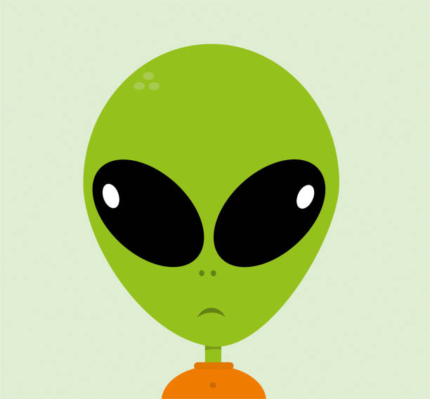

selection process

Get Noticed
The first step in the selection process is simple, the candidate simply has to get noticed. This can be either by submitting an application or by being noticed by one of our recruiters.
shadow
after a candidate is identified, we have a team of professional shadows follow their every ove for the next year. This is to ensure that the candidate will be a good fit for the abduction program.
commitee vote
after following the candidate for a year, the evidence gathered is presented in front of a commitee of experts. they assess the candidate and make a decision on the candidate.